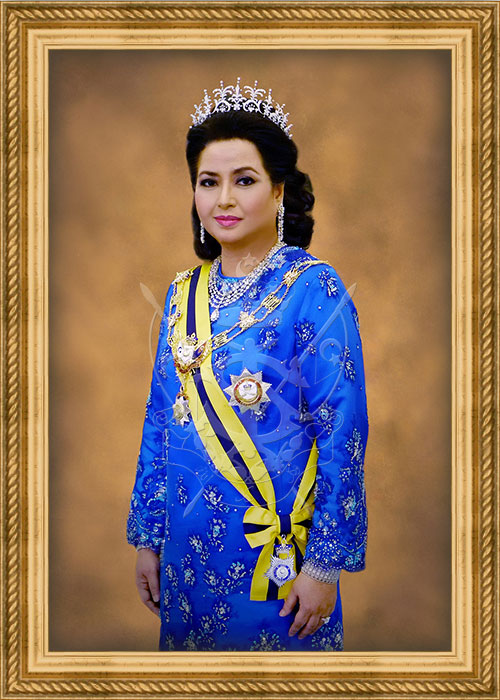

Johor Darul Takzim

Johor Darul Takzim, juga dikenali sebagai Johor atau Kesultanan Johor Moden (tidak rasmi), ialah negeri Malaysia di selatan Semenanjung Malaysia. Johor mempunyai sempadan darat dengan negeri-negeri di Malaysia Pahang di utara dan Melaka dan Negeri Sembilan di barat laut. Sempadan Johor adalah sempadan maritim dengan Singapura di selatan dan Indonesia di kedua-dua barat dan timur. Johor Bahru adalah ibu negeri Johor yang terletak berhampiran dengan negara jiran dan pusat ekonomi negeri, Kota Iskandar adalah pusat pentadbiran kerajaan negeri yang baharu, dan Muar berfungsi sebagai bandar diraja yang diisytiharkan oleh sultan Johor, Sultan Ibrahim.

Ibu negeri lama ialah Johor Lama sepanjang dinasti kesultanan Johor klasik. Sehingga banci 2015, jumlah penduduk negeri ialah 3,553,600. Johor mempunyai kepelbagaian hutan hujan tropika serta iklim khatulistiwa. Rentangan gunung negeri ini merupakan sebahagian daripada Banjaran Titiwangsa, yang merupakan sebahagian daripada Banjaran Tanah Sari terbesar yang dihubungkan ke Thailand dan Myanmar, dengan Gunung Ledang menjadi titik tertinggi di Johor.